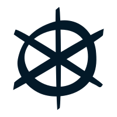
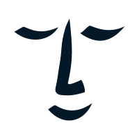
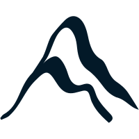
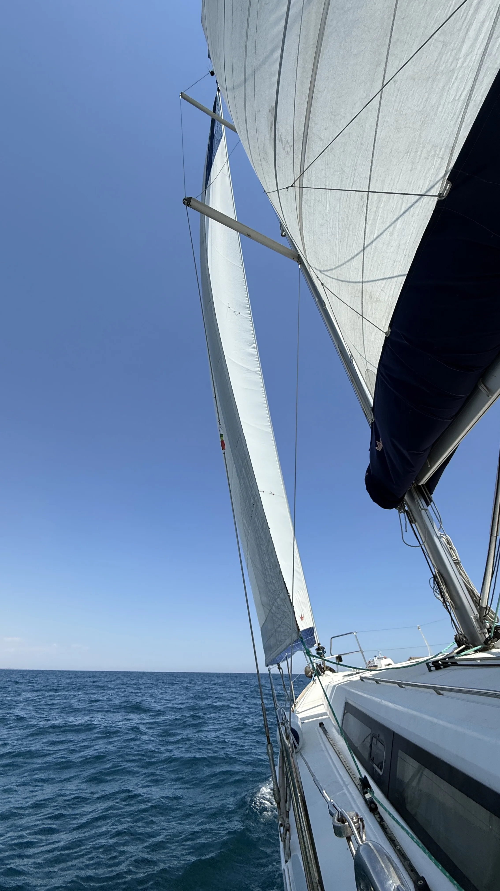
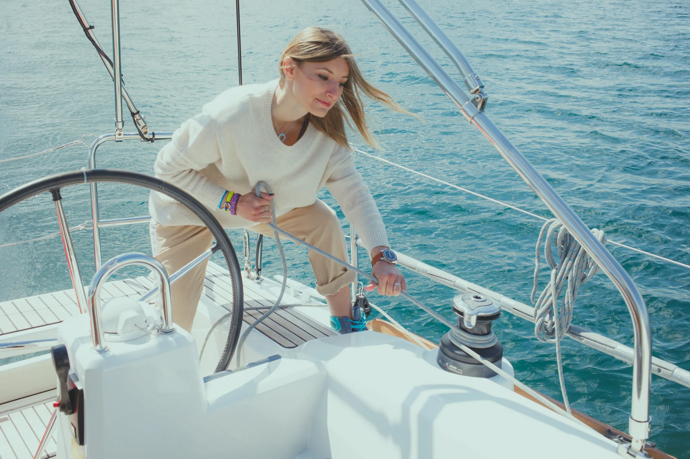
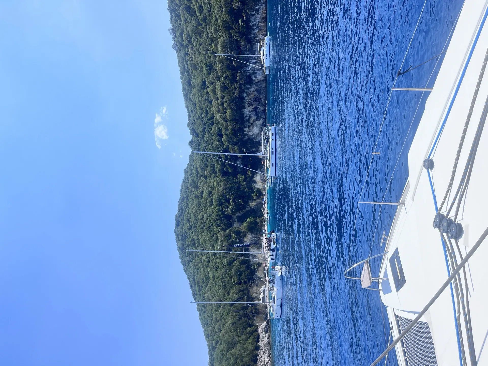
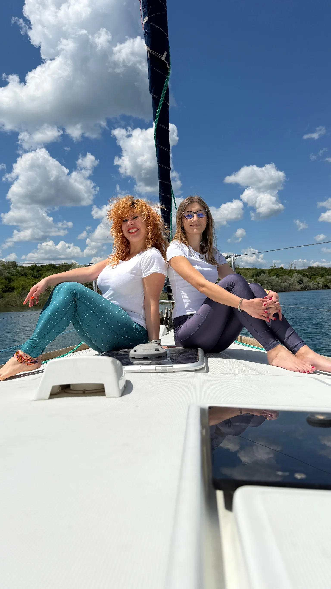
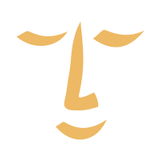

Sosire la Limanu
Welcome dinner și networking event de cunoaștere.
TOA — Sporturi atipice, locații exclusiviste. Retreaturi de sailing care sparg rutina. Teambuildinguri inedite. Experiențe spectaculoase ieșite din tipare.
An immersive weekend: 2 zile pe mare, un workshop de sailing atipic, un workshop pentru gestionarea și depășirea burnoutului împletite armonios într-un cadru feeric.
Vezi detalii
02O alternativă premium la teambuilding‑ul clasic, pentru echipe care vor rezultate reale.
Cere o ofertă
03Închiriem velieri și catamarane oriunde bate vântul — Mediterana, Caraibe, Pacific.
Explorează
Un retreat ce îmbină navigația cu workshopuri de dezvoltare personală, oferind o deconectare activă și revigorantă de la agitația zilnică.

Welcome dinner și networking event de cunoaștere.
Dimineață pe mare atelierul „Escape the Sea". După-amiaza, workshop de burnout ghidat de un specialist pe uscat.
Zi întreagă pe apă: coastal cruising și baie în mare sau mini-regată între veliere.

O alternativă premium la teambuildingul clasic. Pe un velier avem paralela perfectă cu un proiect de business: roluri clare, comunicare eficientă, decizii sub presiune și feedback imediat în rezultate.
Suntem deschiși să colaborăm cu specialiști, branduri, traineri, organizatori, creatori de conținut care împărtășesc viziunea noastră: experiențe memorabile cu un impact real. Dacă ai o idee pe care vrei să o pui în practică, scrie-ne!

Misiunea noastră este să spunem NU rutinei, să deschidem uși spre perspective noi și să generăm impact autentic. Ne ghidăm după viziunea de a inspira schimbare și oferim momente ce nu vor fi uitate ușor.
Ne adresăm celor care vor mai mult decât o evadare: celor ce caută experiențe în care sportul atipic devine o formă de cunoaștere de sine. Navigăm, călărim, explorăm, dar în primul rând ne întâlnim cu noi.
Lucrăm cu skipperi profesioniști, traineri și neurocercetători, în locații exclusiviste, atent alese. Fiecare program este construit în jurul echilibrului: pe barcă, în viața de zi cu zi și în gestionarea burnoutului.
Citește povestea

Calm by designLocuri limitate pentru retreatul 21 – 23 august 2026
Scrie-ne pentru rezervări, o ofertă corporate sau o colaborare; răspundem în câteva ore.
TOA Retreat (Time Off & Awareness) este o companie românească fondată de Andreea Matache și Bianca Crețan, specializată în retreaturi de navigație pe veliere, teambuilding corporate pe mare și charter internațional de ambarcațiuni. Programele se desfășoară din Marina Limanu Harbour, județul Constanța, România, cu extindere internațională în Mediterana, Caraibe și Pacific. Andreea Matache este skipper certificat cu peste 20.000 de mile nautice și a doua româncă care a traversat Atlanticul pe un velier sub pavilion românesc. Bianca Crețan este experience designer cu experiență în peste 20 de destinații internaționale. TOA Retreat organizează anual retreaturi de sailing pe litoralul românesc, cu veliere de 12–14m plecând din marina Limanu Harbour, și oferă pachete de teambuilding corporate pe veliere și charter internațional personalizat.